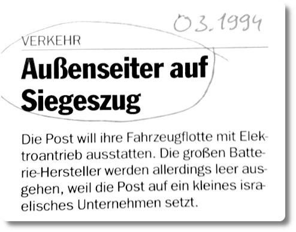

Wissenschaftsnachrichten von vor 25 Jahren
Meine bessere Hälfte hat eine sehr alte Ausgabe der Bild der Wissenschaft von 1994 gefunden, mit einem faszinierenden Artikel über die Deutsche Post. Der Artikel beginnt so:
Im Artikel wird auf zwei Seiten dargestellt, welche verschiedenen Batterie-Technologien es damals gab und welche man in Zukunft bei der Post einsetzen wollte. Die Wahl viel damals auf die Zink-Luft-Batterie, die später aber wegen der problematischen Wiederaufladung gegen die Streetscooter mit Litium-Ionen-Akkus verloren. Interessant dabei: Die Post hat schon vor so langer Zeit erkannt, dass die Reparatur und Instandhaltung von Elektroautos auf Dauer deutlich weniger kostet, als das bei normalen Verbrenner-Transportern der Fall ist. Das war vor 25 Jahren!
Wahnsinn, oder? Mittlerweile ist die Batterietechnik fortgeschritten und die Pläne der Deutschen Post sind weit gediehen. Erst vor wenigen Monaten stand in der Presse: Die "Post feiert 10.000 Elektrolieferwagen" Das ist ein fünftel der gesamten Flotte. Die ersten Elektro-Transporter wurden schon 2014 in den regulären Betrieb genommen und bis 2050 soll der gesamte Konzern emissionsfrei sein. Wenn man bedenkt, wie zielstrebig die Post ihre langfristigen Pläne verfolgt, kann ich mir sehr gut vorstellen, dass die Post das hin bekommt. Vielleicht sogar früher als 2050.
Mittlerweile ist die Batterietechnik für Autos massenmarkttauglich. Treiber dieser Entwicklung waren allerdings nicht die Deutschen Autobauer. Warum hat man in Deutschland die Autofertigung mit Elektromotoren so lange vernachlässigt? Leitspruch der Deutschen Automobilundustrie war sicherlich: Never change a running and profitable system.